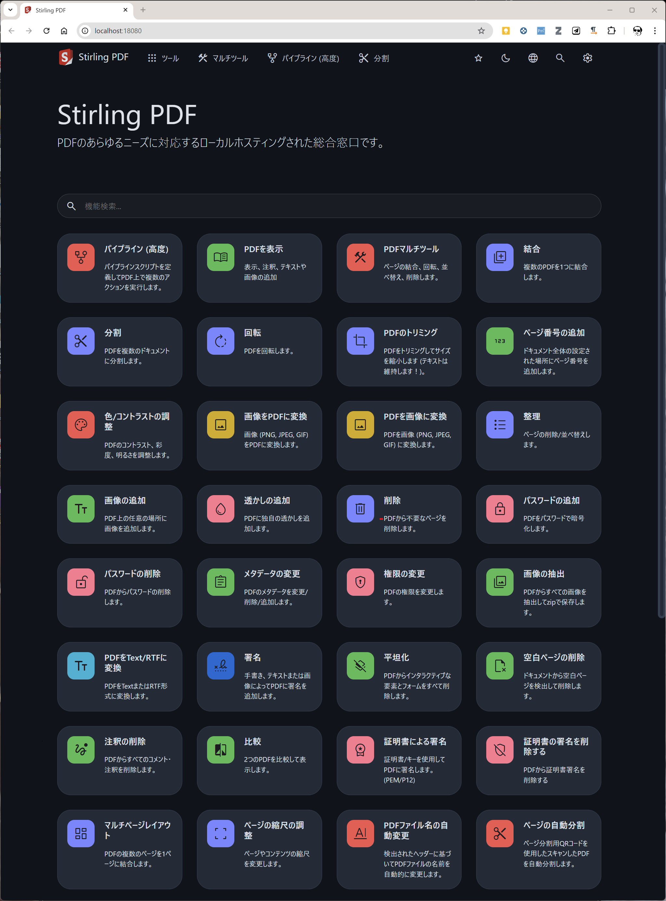

PDFの処理に Acrobat Proは必要ですか？ 電子書類保存法が施行されたのと関連するのか、年々ライセンスが高騰していくのが気になります。
たかが、スタンプを押したりするだけですよ？
私のような臍曲りの需要を満たしてくれるのが、Stirling PDFです。

一方で、記入可能なPDFフォームを備えたPDFの作成は、 LibreOfficeで一応可能ですが、万人が満足できる？と問われると疑問符が付きます。
TeXでPDFフォームを扱うpackageは CTANにありますが、TeX故の困難さが付き纏います。
Typstは、これらを解決してくれるのでしょうか？
インストール
scoop install stirling-pdf 起動
Stirling-PDFのアイコンを叩きます。
すると、command.comが起動し、続いてブラウザがStirling-PDFを呼び出してくれる筈です。
トラブルかな？
port 8080
Stirling PDFはyaws経由で動作しますが、標準ではTCPの8080番ポートを使おうとします。他のアプリケーションがTCPの8080番を使っている場合は、Stirling PDFの画面が表示されません。
解
$HOME/scoop/persist-pdf/configs/custom_settings.yml を編集する。 下記は、port 18080を使用する場合。
server:
host: localhost #(Can skip if don't want to add any).
port: 18080 #(or whatever new port you want)from https://github.com/Stirling-Tools/Stirling-PDF/issues/1173
メニューetc.が日本語表示されない
解1
https://127.0.0.1:8080/?lang=ja-JP にアクセス
解2
$HOME/scoop/persist/stirling-pdf/configs/settings.ymlを編集する
defaultLocale ja-JPにして再起動。
from https://x.com/lempickaau/status/1831876285980930073

PDFを扱うツール色々
引用
@misc{csefalvay2024,
author = {Goudge and , 魔狸},
title = {Stirling PDF},
date = {2024-09-08},
langid = {ja}
}